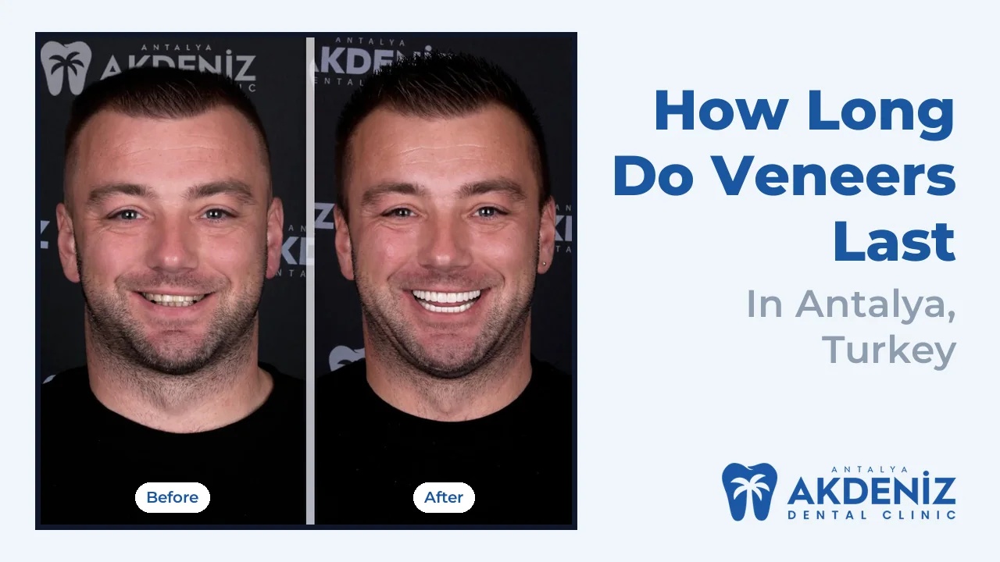

Fațetele din porțelan făcute în Turcia durează de obicei între 7 și 15 ani. Fațetele E-max durează de regulă între 10 și 15 ani, iar cu o îngrijire bună multe ajung la 20 de ani sau mai mult. Fațetele din compozit se situează mai jos, la aproximativ 5–7 ani.
Cât durează fațetele dentare din Turcia, în funcție de material?
Materialul stabilește punctul de plecare. Iată cum se compară principalele opțiuni pentru pacienții care aleg fațete dentare în Antalya:
| Material | Durată de viață obișnuită | Ales adesea pentru |
|---|---|---|
| E-max (disilicat de litiu) | 10–15 ani, adesea 20 sau mai mult cu o îngrijire bună | Translucență naturală și rezistență |
| Porțelan feldspatic | 7–15 ani, până la 20 cu o îngrijire bună | Fațete foarte subțiri |
| Zirconiu | 7–15 ani | Rezistență la forțe mari de masticație |
| Compozit | 5–7 ani | Modificări mai mici și reparații ușoare |
Acestea sunt medii, nu promisiuni. Ocluzia și obiceiurile dumneavoastră zilnice influențează cifra.
Ce spun studiile pe termen lung despre fațetele dentare?
Cifrele sunt liniștitoare.
O recenzie sistematică din 2021, publicată în Journal of Clinical Medicine, a reunit 25 de studii și 6.500 de fațete din porțelan. Estimarea sa: 95,5% erau încă funcționale după 10 ani. (Autorii le cer totuși cititorilor să trateze această cifră cu o anumită prudență, deoarece studiile diferă între ele.)
Alte două constatări ies în evidență. Fractura și dezlipirea au fost cele mai frecvente complicații și ambele au avut tendința să apară în primii ani, așa că merită din plin să programați un control timpuriu. Iar fațetele nefeldspatice, grupă din care face parte E-max, s-au comportat mai bine decât cele feldspatice.
De ce mulți pacienți aleg fațete E-max în Turcia
Rezistență și aspect estetic, într-o singură coajă subțire.
Fațetele E-max din Turcia sunt realizate din disilicat de litiu, o ceramică ce lasă lumina să treacă la fel ca smalțul natural — astfel, zâmbetul nu pare plat în lumină puternică sau în fotografii. Deoarece coaja este atât de subțire, medicul poate de obicei să păstreze și mai mult din dinte.
Contează și munca din laborator. Akdeniz Dental Clinic are propriul laborator, Akdeniz Dental Lab, ceea ce le permite medicului și tehnicianului să stabilească împreună, față în față, nuanța și forma.
Studiile clinice, factorii care influențează durata de viață a fațetelor E-max și sfaturile de îngrijire sunt prezentate în detaliu în articolul cât durează fațetele E-max.
Are nevoie fiecare zâmbet de E-max? Nu. În unele cazuri se potrivește zirconiul; în altele este suficient compozitul. Consultația decide acest lucru.
Plătiți eșalonat fațetele dentare din Turcia
Plănuiți fațete dentare în Antalya? Aflați cum vă puteți finanța tratamentul prin Ideal4Finance, cu opțiuni de rambursare lunară adaptate.
Ce ajută fațetele dentare din Antalya să dureze mai mult?
O bună parte din muncă se face înainte să vă ridicați de pe scaun: planificarea atentă a ocluziei și cimentarea pe smalț ori de câte ori este posibil, deoarece smalțul oferă cea mai puternică aderență.
Restul depinde de dumneavoastră și este destul de simplu:
- Purtați o gutieră de noapte dacă scrâșniți din dinți. Probabil cel mai important lucru pe care îl puteți face pentru fațetele dumneavoastră.
- Curățați corect linia gingiei. Fațeta în sine nu se carie; dintele din spatele ei, însă, se poate caria. Ață dentară sau periuțe interdentare, în fiecare zi.
- Lăsați dinții să fie doar dinți. Gheață, pixuri, capace de sticle — nu le folosiți.
- Nu săriți peste controale. La fiecare șase luni.
Ce se întâmplă cu fațetele dentare din Turcia după 10 ani?
De obicei? Nu mare lucru.
Multe fațete bine îngrijite arată și funcționează încă excelent la 10 ani; nimic nu se oprește la a zecea aniversare. Linia gingiei se poate deplasa puțin sau o margine se poate colora ușor, iar un medic dentist le poate adesea lustrui sau ajusta fără a înlocui nimic.
Semne că fațetele dumneavoastră trebuie înlocuite
- O ciobitură sau o fisură
- O fațetă care pare slăbită sau face clic
- O linie închisă la culoare acolo unde fațeta întâlnește gingia
- Sensibilitate nouă în jurul unui dinte
- O culoare care nu se mai potrivește cu dinții vecini
Dacă ceva nu vi se pare în regulă, mergeți la control din timp. Problemele mici se rezolvă mult mai ușor.
Pot fi înlocuite fațetele dentare în Turcia?
Da, și este o procedură de rutină. Pacienții care și-au făcut fațete în altă parte cu ani în urmă vin adesea în Antalya pentru un set nou, uneori dintr-un alt material sau într-o nuanță mai naturală.
Ce se întâmplă cu dintele de dedesubt?
Medicul îndepărtează fațeta veche, examinează dintele și pregătește suprafața. Apoi laboratorul realizează fațeta nouă, care este cimentată la locul ei. Dintele a fost deja șlefuit prima dată, așa că de obicei are nevoie de foarte puțină pregătire suplimentară.
Dacă un dinte s-a schimbat mult între timp, de exemplu în urma unei obturații mari sau a unui tratament de canal, o coroană îl poate proteja mai bine. Acest ghid despre fațete vs. coroane explică diferența.
Fațetele făcute în Turcia durează la fel de mult ca fațetele din Marea Britanie?
Întrebare legitimă. Iar răspunsul este simplu: durata de viață depinde de material, de munca din laborator, de planificarea ocluziei și de îngrijirea de acasă. Studiile pe termen lung urmăresc materiale și tehnici, nu pașapoarte.
E-max este aceeași ceramică din disilicat de litiu, fie că este aplicată în Antalya, fie la Londra. Așadar, de la fațetele din Turcia, bine planificate și bine îngrijite, se poate aștepta să atingă aceiași 7–15 ani.
Îngrijirea fațetelor după ce plecați din Antalya
Fațetele zboară acasă cu dumneavoastră, la fel și rutina de îngrijire.
Așteptați-vă la câteva zile în care vă obișnuiți cu senzația nouă; majoritatea pacienților se adaptează rapid. Apoi programați un control la medicul dentist din localitatea dumneavoastră în primul an și continuați la fiecare șase luni, deoarece orice medic dentist poate curăța în jurul fațetelor și le poate verifica.
Simțiți ceva diferit? Trimiteți clinicii fotografiile sau radiografiile pentru o consultație online.